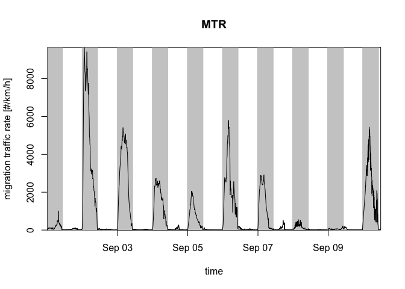

bioRad provides standardized methods for extracting and reporting biological signals from weather radars. It includes functionality to inspect low-level radar data, process these data into meaningful biological information on animal speeds and directions at different altitudes in the atmosphere, visualize these biological extractions, and calculate further summary statistics.
To get started, see:
- Dokter et al. (2019): a paper describing the package.
- bioRad vignette: an introduction to bioRad’s main functionalities.
- Function reference: an overview of all bioRad functions.
- Introductory exercises: a tutorial with code examples and exercises.
More vignettes:
- Range correction: estimate spatial images of vertically integrated density corrected for range effects.
Documentation for the latest development version can be found here.
Installation
Install system libraries
For OS X and Linux the GNU Scientific Library (GSL), PROJ and HDF5 libraries need to be installed as system libraries prior to installation, which are required by dependency package vol2birdR:
| System | Command |
|---|---|
| OS X (using Homebrew) | brew install hdf5 proj gsl |
| Debian-based systems (including Ubuntu) | sudo apt-get install libhdf5-dev libproj-dev gsl-bin libgsl-dev |
| Systems supporting yum and RPMs | sudo yum install hdf5-devel proj-devel gsl gsl-devel |
Additional required system libraries on Linux (Ubuntu)
The following system libraries are required before installing bioRad on Linux systems. In terminal, install these with:
sudo apt install libcurl4-openssl-dev
sudo apt install libssl-dev
sudo apt install libgdal-devInstall bioRad
You can install the released version of bioRad from CRAN with:
install.packages("bioRad")Alternatively, you can install the latest development version from GitHub with:
# install.packages("devtools")
devtools::install_github("adokter/bioRad")Then load the package with:
(optional) Enable MistNet
To enable MistNet, the following vol2birdR commands should be executed:
vol2birdR::install_mistnet()
vol2birdR::install_mistnet_model()Read the vol2birdR documentation for more details.
Usage
Radar data example
bioRad can read weather radar data (= polar volumes) in the ODIM format and formats supported by the RSL library, such as NEXRAD data. NEXRAD data (US) are available as open data and on AWS.
Here we read an example polar volume data file with read_pvolfile(), extract the scan/sweep at elevation angle 3 with get_scan(), project the data to a plan position indicator with project_as_ppi() and plot the radial velocity of detected targets with plot():
library(tidyverse) # To pipe %>% the steps below
system.file("extdata", "volume.h5", package = "bioRad") %>%
read_pvolfile() %>%
get_scan(3) %>%
project_as_ppi() %>%
plot(param = "VRADH") # VRADH = radial velocity in m/s
Radial velocities towards the radar are negative, while radial velocities away from the radar are positive, so in this plot there is movement from the top right to the bottom left.
Vertical profile data example
Weather radar data can be processed into vertical profiles of biological targets using calculate_vp(). This type of data is available as open data for over 100 European weather radars.
Once vertical profile data are loaded into bioRad, these can be bound into time series using bind_into_vpts(). Here we read an example time series, project it on a regular time grid with regularize_vpts() and plot it with plot():
example_vpts %>%
regularize_vpts() %>%
plot()
#> projecting on 300 seconds interval grid...
The gray bars in the plot indicate gaps in the data.
The altitudes in the profile can be integrated with integrate_profile() resulting in a dataframe with rows for datetimes and columns for quantities. Here we plot the quantity migration traffic rate (column mtr) with plot():
my_vpi <- integrate_profile(example_vpts)
plot(my_vpi, quantity = "mtr") # mtr = migration traffic rate
To know the total number of birds passing over the radar during the full time series, we use the last value of the cumulative migration traffic (column mt):
my_vpi %>%
pull(mt) %>% # Extract column mt as a vector
last()
#> [1] 129491.5For more exercises, see this tutorial.
Meta
- We welcome contributions including bug reports.
- License: MIT
- Get citation information for
bioRadin R doingcitation("bioRad"). - Please note that this project is released with a Contributor Code of Conduct. By participating in this project you agree to abide by its terms.